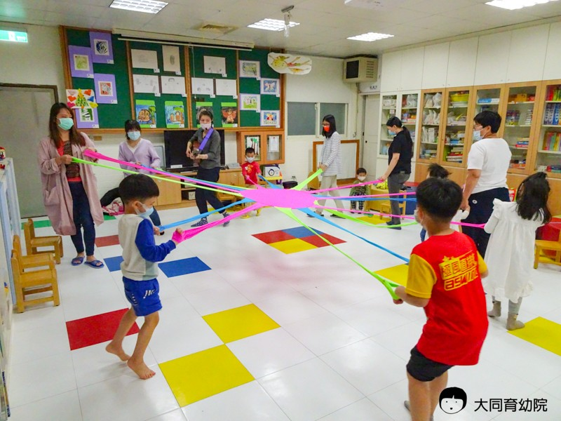

本院秉持著『以家庭為中心』理念建置早療家庭資源中心的硬體空間與轉體服務，並於2008年正式對外服務，以早療兒童及其家庭為主要服務對象，連結資源提供符合早療家庭需求之多元親職支持服務內涵。家資服務型態跳脫兒童本位與治療取向的傳統療育觀念，改採生態系統觀、以家庭為本位、健康取向的預防性觀點，更重視親子共學成長、發展社會人際支持網絡，並強調孩童生活適應能力培養及家庭參與。期透過『愛Love』、『生活Living』與『學習Learning』為主軸之各項服務推展，持續促進接納、友善、共融的社會環境。
☆『親子成長系列活動』
辦理常態性互動式親子教育系列活動，期透過教學示範與實際操作過程，提供良性親子互動與親子共學成長機會，增進親子親密關係。
◎『週四同學繪』：
開放2-6歲社區親子，藉由繪本促進親子互動及引導技巧示範，提供家庭社交人際支持網絡連結及親子共讀學習的機會。
◎『週三午后約會』：
每個月隔週三下午15:30~16:30辦理，以多元性主題規劃一系列親子活動，促進早療家庭更豐富的學習成長經驗
◎『週六家庭樂活日』：
為讓早療家庭的上班族父母們有機會利用週末假日陪伴親子共同成長，故安排多元互動式的親子活動，如：『親子點心DIY』、『親子樂攀岩』、『夏日樂游游』、『幸福小市集』、『親子動動樂』等，以促進親子良性互動與拓展家庭生活領域，提供早療家庭人際連結與社區參與機會，使家庭樂活起來。
☆『家長成長系列活動』
運用團體運作及培力課程等方式，輔助家長在參與過程持續培力，由『自助』、『互助』走向『助人』，不僅有助支持網絡的擴展與深化，更成為機構合作伙伴，提供基本支援人力並輔助相關服務建置與發展等，與機構共同形塑出使用者需求導向的相關延伸服務，具體展現培力的長期持續性效益。
◎家長支持網絡：
自助團體之運作乃由早療家長主導的多元創意的學習型式，如：『家長樂活健康』、『幸福廚房』等滿足家長親職與自我成長及健康之需求。透過早療家長分享自身有興趣或發揮自己能力之主題進而去帶領和規劃，重新建構自我、充實自己的能力，並透過同儕互助支持過程，分享自我經驗進而成為他人的幫助。
◎家長培力：
以早療家長主動學習的需求為出（如：繪本說故事、安親課輔知能等）規劃，經過階段性培訓課程後，成員自發性組成任務性團體（如：繪本媽咪），透過繪本說故事服務及外展宣導服務等，運用學習成果發揮『利他』效益。
◎家長支持性團體： 為回應早療家長長期陪伴發展遲緩兒童之心理情緒支持需求，規劃多元主題之支持性家長成長團體，如：阿德勒正向鼓勵家長支持團體、家長自我照顧溫心支持團體、藝起放心繪藝術治療團體等，幫助家長表達隱藏的情緒、克服現實生活中適應上的障礙及協助家長發展新的的生活技能、人際關係及意義感，並逐步發展＆建立社會支持網絡。
☆『外展宣導系列』
◎外展宣導服務：
除了透過早療臉書（2016~2022年）階段性的運作網絡服務行銷，亦透過主動連結促進資源間合作，進入鄰近社區相關據點，包括：醫療院所、學校、親子館、公托中心、社福機構等，增加接觸潛在服務對象之機會。近年來亦嘗試開發跨領域的網絡資源合作契機（如：企業CSR、學生志工等），發展創新服務型式，如：『教具教材推廣活動』、『歡迎光臨家資中心』等。
